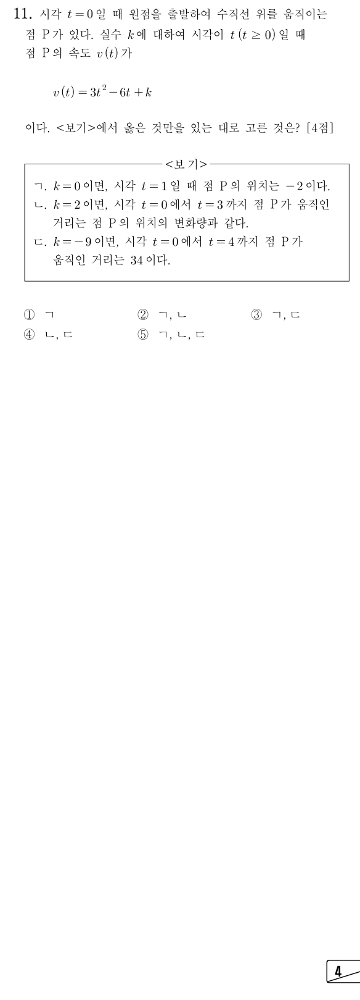

둘째 줄이 시각 일 때의 위치야. ㉠에서 출발 위치가 0이니까, 0에 ㉢의 를 부터 까지 적분한 값을 더하면 돼.
주의ㄱ은 위치를 물었지 움직인 거리를 물은 게 아니야. 절댓값을 씌우지 않고 음수가 나오면 음수 그대로 두자.
판단움직인 거리는 의 정적분, 위치의 변화량은 의 정적분이야. 둘이 같으려면 에서 이어야 하니까 적분보다 부호를 먼저 확인하자.
단축정적분을 계산할 필요가 없어. 완전제곱 꼴로 바꿔서 이차함수 의 최솟값의 부호만 보면 끝나.
주의이 안에 있는지 꼭 확인하자. 는 연속이라 의 앞뒤로 인 구간이 생기고, 거기서는 라서 ㄴ의 '같다'가 깨져.
판단움직인 거리를 물었으니 의 부호가 바뀌는 시각에서 적분 구간을 잘라야 해. ㉡에서 이라 이고, 부호는 이 정해.
주의을 만족시키는 은 ㉡의 범위 밖이라 버려. 구간을 자르는 시각은 하나뿐이야.
단축의 값을 에서 한 번씩만 구해 두고 차만 쓰면 두 정적분이 한꺼번에 나와. 에서는 0이라 따로 적지 않았어.
주의음수가 나온 앞 조각의 부호를 바꾸지 않고 그냥 더하면 위치의 변화량이 되어 버려. 거리는 조각마다 0보다 크거나 같은 값으로 바꿔서 더하는 거야.
절댓값 없이 부터 까지 통째로 적분한 값이 두 조각을 부호 그대로 더한 값과 맞는지 본 거야. 조각 계산이 틀리지 않았다는 점검이지.
ㄷ의 34가 맞았으니 세 보기의 판정을 표로 모아서 선택지를 고르자.